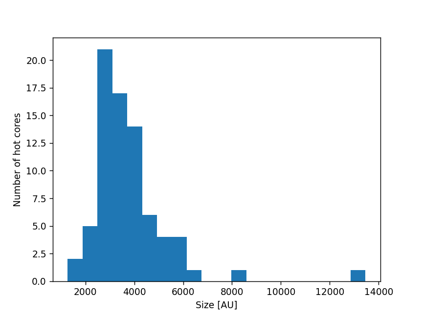

- To move slides, use the arrow keys or swipe on your mobile device
- To go to full screen, press "f"
- To print as PDF, go to this URL:
?print-pdf, then print (warning: may be slow and not work on all browsers).
- To see an overview, press esc
Hot Cores and the CMF
with the ALMA-IMF team, postdoc Allison Towner, and students
Desmond Jeff, Theo Richardson, Alyssa Bulatek, Nazar Budaiev,
and Savannah Gramze
Slides available at
https://keflavich.github.io/talks/starstogalaxies2022_hotcores.html
Meet my group
 47 Nazar Budaiev: Protostars & cores in Sgr B2
47 Nazar Budaiev: Protostars & cores in Sgr B2
|
 54 Desmond Jeff: Hot Cores in Sgr B2 DS
54 Desmond Jeff: Hot Cores in Sgr B2 DS
|
 61 Theo Richardson: YSO radiative transfer modeling
61 Theo Richardson: YSO radiative transfer modeling
|
 64 Allison Towner (postdoc): SiO in ALMA-IMF (at low velocities)
64 Allison Towner (postdoc): SiO in ALMA-IMF (at low velocities)
|
 165 Alyssa Bulatek: Lines as tracers of physical processes in The Brick
165 Alyssa Bulatek: Lines as tracers of physical processes in The Brick
|
 169 Savannah Gramze: Overshooting and crashing gas along the Galactic bar
169 Savannah Gramze: Overshooting and crashing gas along the Galactic bar
|
How does the observed CMF transform to the IMF?

ALMA-IMF: $\sim800$ cores

Pouteau+ 2022 W43-MM2/3
ALMA-IMF:

Top-heavier IMFs are seen in high-mass clusters,


 Desmond Jeff:
Desmond Jeff:
Ten hot cores in Sgr B2 DS
TG ~ 200-500 K
M ~ 200 - 2900 M⊙

ALMA-IMF:
The CMF is shallow (top-heavy) in HMSFRs
Top-heavier IMFs are seen in high-mass clusters,
CMFs in protoclusters

Hot cores in ALMA-IMF: From rare objects to a population ($\sim50$)
Cores with line forests
TD>50 K
TG ≳100K
TD>50 K
TG ≳100K
Brouillet+, submitted prep
Hot cores are mostly small ($\lesssim5000$ AU)
Hot cores are generally the most massive cores
HCs don't fragment in our data
No clear cases of another core existing with the radius (as seen in CH3OCHO) of a hot core in ALMA-IMF data.
Limited fragmentation at higher resolution. |

|
Hot cores: Also in the Galactic center
Desmond Jeff:
Ten hot cores in Sgr B2 DS
TG ~ 200-500 K
M ~ 200 - 2900 M⊙
Hot cores in the CMZ are a bit hotter and more massive